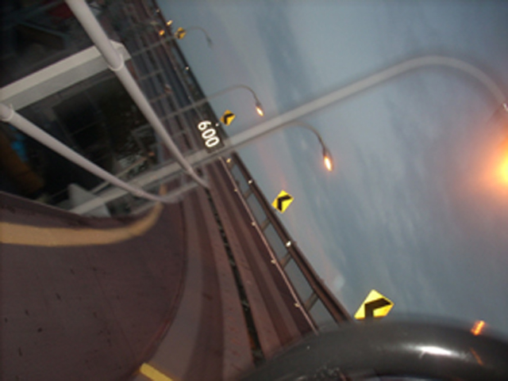
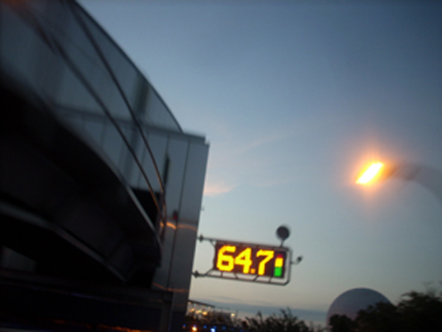
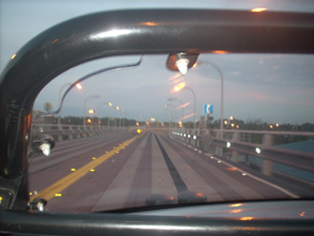
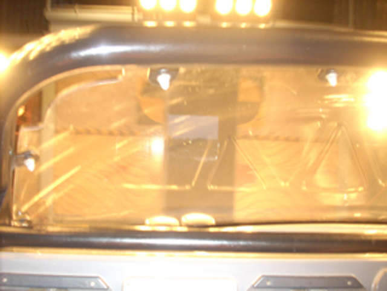
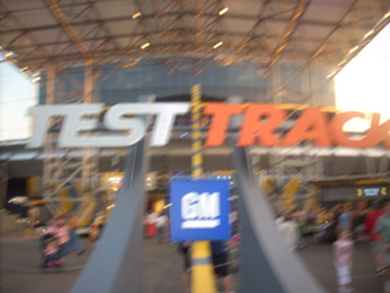
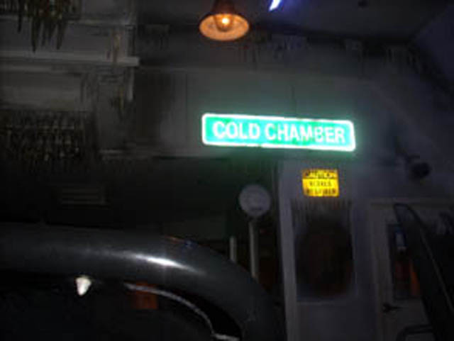

| |
Test Track Review

Today at the Walt Disney World Resort, we're here to review Test Track. Currently my favorite Disney Dark Ride and possibly my favorite dark ride of all time. Test Track. You first get into the line and look at some car stuff. Then you see a preshow that explains the ride. And before you know it, you are buckling your seat belt and ready to go just like as if you were driving in your real car. Except here, you don't have to deal with obnoxious radio stations. Then we head up and into our first test. The Hill Test. It's a bit of a challenge, but you make it up the hill just fine. Then you head around a turn and you proceed to the Rough Road Test. We then head downhill slowley as we bump over the rough road. This test is kind of like Wild Beast at Canada's Wonderland as they're both slow, downhill, and rough. Except Wild Beast is not fun, a sh*tty wooden coaster, painful, never picks up any speed, has no theming, no one to give you advice during the ride (Even if they had, they'd just say "Get off this ride you retard!"), is in a foreign country, and doesn't even deserve the privelage of becoming firewood. Ok, it's NOTHING like Wild Beast (Thank God). You go around a turn with some more rough road, and then it's off to our next test. The Automatic Steering Test. With this test, you speed up, kind of like a mini launch, and then brake and swerve into some cones. This is awesome as it gives you some tastey laterals. That, and I just love slamming into random strangers. But apparently, we f*cked up and got off track. So we then turn around, and try it again. This time it's not nearly as fun as the laterals arn't nearly as insane during the turn. And honestly, crashing is cool. And now we head off into the extreme test conditions. First off, we roll through the Heat Chamber. It kind of looks like a Microwave and feels like Cody's Paradise, only without Maverick. And then, we move on into the Cold Chamber. Now if you've been with Incrediblecoasters for a while, you'll know that the first time we rode Test Track, our car got stuck in the Cold Chamber. So I have a higher knowledge of the Cold Chamber than many Florida Coaster Enthusiast Residents. If you really want, I can tell you all about the Cold Chamber. But you should really just watch the video of us Stuck in the Cold Chamber, as that gives you a pretty good interpretation of what it's like to be in the Cold Chamber. Then we head through some pesticide chamber that smells wierd. At least I didn't get stuck in there with the not turned off robots. Then we head off into Course A. First off on Course A, we head up some spiral road and pick up speed at 10 %, then 20 %. Then we go through a turn, and then another turn. It's almost like being on a Wild Mouse. Except in a car, on a dark ride. After a bunch of turns, we almost get run over by some dumbass drunk truck driver, but luckily we have our proffesional swerving skills to keep us out of the way. Then we head out for our suprise test. The Crash Test. We launch straight towards the wall. Though it looks like doom, we just smile and go "WEE!!!!!" Knowing we will be saved by Disney Magic. And sure enough, Micky Mouse magically parts the wall. He is the new god!! All Hail Mickey Mouse!!!! Nah, Screw him. Let's get the hell out of here. We then head down a dip, and FLOOR IT during some straight track. To avoid being chased, we gain speed and go around in a circle, laughing all the way. Then after that fun turnaround, we have to PUSH IT HARDER!!! We then FLOOR IT and reach speeds faster than a Wacky Worm on steroids. So we end up going around 65 mph. We then head into a giant turn, where we decelerate and head into the brake run. Overall, I LOVE Test Track and this ride kicks ass!! So yeah. This ride is awesome. Go ride it if you're at the Walt Disney World Resort.
9/10
Location: Walt Disney World Resort
Opened: 1999
Built by: Disney
Last Ridden: November 24, 2007
Test Track Photos





Home
|